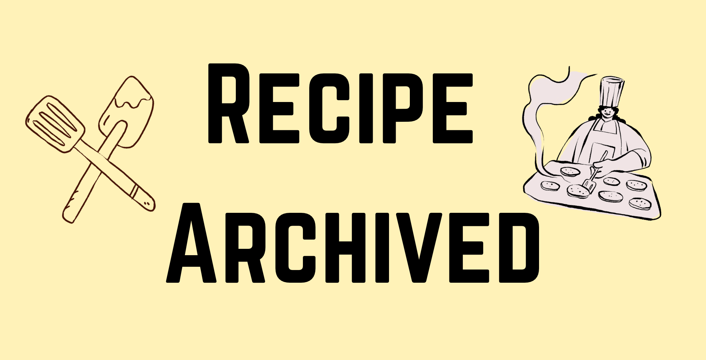

WorkAccyr Recipes
Recipes
Meal Planner
Food Log
About
Sign In
Daily Meal & Recipe Log
Track what you've cooked and eaten from your saved recipes.
Total Logged Calories
0 kcal
Log a Meal
Recipe Eaten
Servings
Log Meal
Logged History